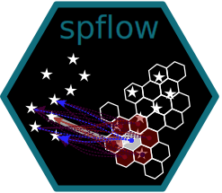

spflow 
The spflow package allows to estimate spatial econometric interaction models. It is designed to exploit the relational structure of flow data, reducing the computational burden and memory requirements.
Installation
You can install the released version of spflow from CRAN with:
install.packages("spflow")And the development version from GitHub with:
# install.packages("devtools")
devtools::install_github("LukeCe/spflow")Example
The package provides a new spflow_network_multi-class that combines information on the origins, the destinations, and the origin-destination pairs. Once this object is created, we can estimate an interaction model with the spflow() function. By default the model includes three autoregression parameters: rho_o, rho_d, rho_w. These parameters are related to origin-, destination-, and origin-to-destination-dependence.
Through the formula interface we specify which variables are used as origin O_(), destination D_(), intra-regional I_() and OD-pair P_() characteristics.
For more detailed examples have a look at the package vignette.
library("spflow")
data("multi_net_usa_ge")
spflow(y9 ~ O_(X) + D_(X) + I_(X) + P_(DISTANCE), multi_net_usa_ge)
#> --------------------------------------------------
#> Spatial interaction model estimated by: MLE
#> Spatial correlation structure: SDM (model_9)
#> Dependent variable: y9
#>
#> --------------------------------------------------
#> Coefficients:
#> est sd t.stat p.val
#> rho_d 0.497 0.030 16.499 0
#> rho_o 0.333 0.037 9.001 0
#> rho_w -0.227 0.044 -5.117 0
#> (Intercept) 10.198 2.161 4.719 0
#> (Intra) 9.871 1.531 6.445 0
#> D_X 0.983 0.069 14.321 0
#> D_X.lag1 0.509 0.115 4.437 0
#> O_X -0.759 0.038 -19.917 0
#> O_X.lag1 -0.367 0.093 -3.965 0
#> I_X 2.035 0.083 24.650 0
#> P_DISTANCE -2.622 0.384 -6.829 0
#>
#> --------------------------------------------------
#> R2_corr: 0.9921423
#> Observations: 256
#> Model coherence: Validated